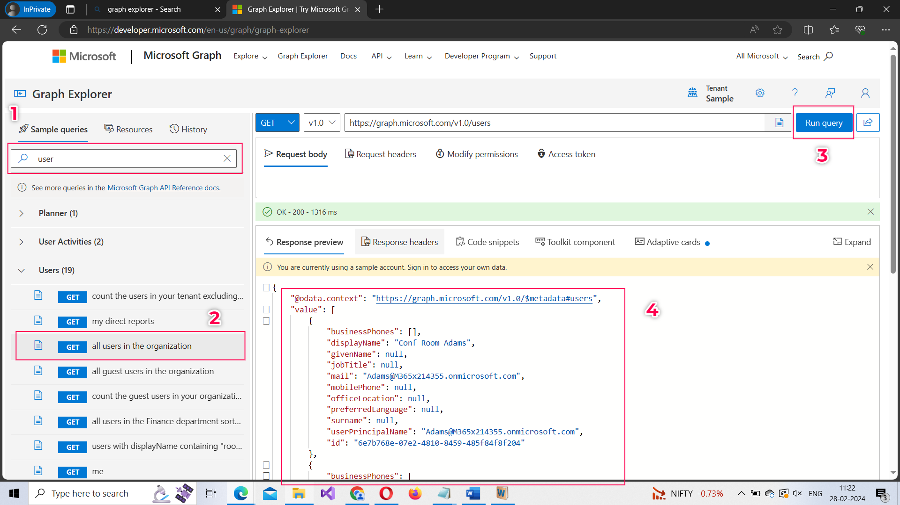
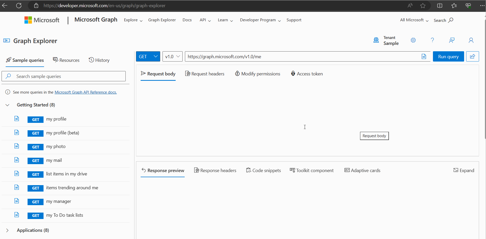
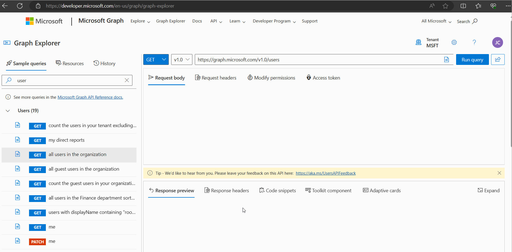
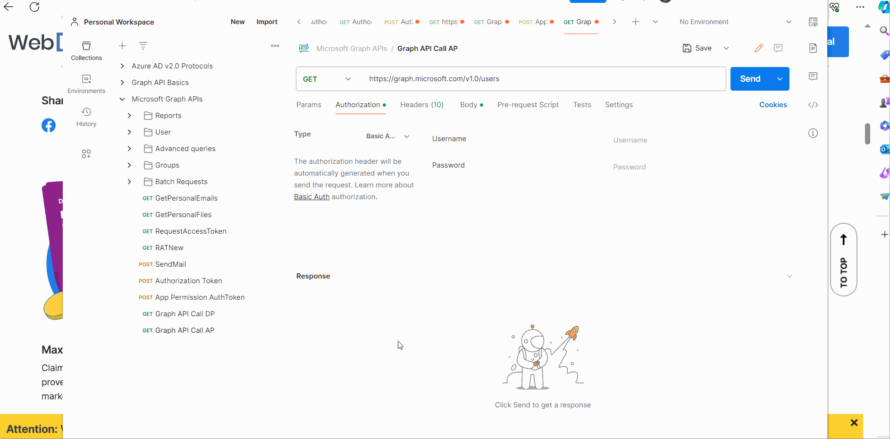
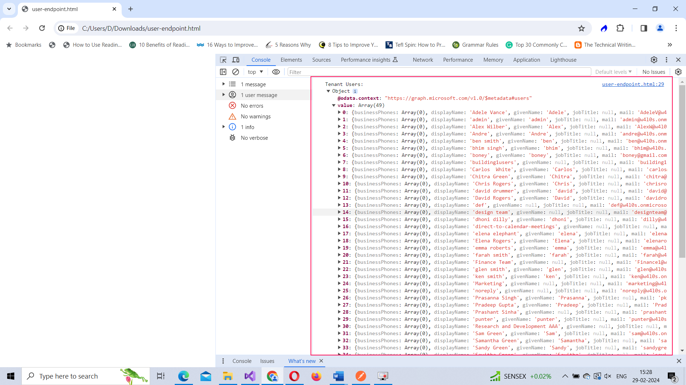

You might think why you have to go through Microsoft Graph API to query Microsoft 365 data? Wouldn’t it be easier if you directly made calls to Microsoft 365 APIs? Of course, you can. But the problem is Microsoft 365 is made of multiple services – like Teams, Exchange, SharePoint etc., - and you’ll be required to authenticate yourself against each of these services separately, as and when required. At least, that’s how things where until Microsoft Graph was introduced.
Microsoft Graph unified all of the Microsoft 365 API services into one single module. So no more multiple authentications. What’s more is that Microsoft Graph connects these services together well, meaning your API calls would be more efficient. And the more efficient your API calls are, the more efficient would be your app.
Note: Office 365 API (or Microsoft 365) API is now legacy and Microsoft recommends using the Microsoft Graph API instead.
Graph API is a REST API that allows you to access data across Microsoft 365 Core Services (like Teams, Exchange, SharePoint etc.,) and Microsoft 365 Enterprise Mobility and Security Services (Microsoft Entra ID and Intune). You can also use Graph API to query Microsoft Dynamics 365.
Note: Microsoft Dynamics 365 is a cloud-based application that combines CRM and ERP capabilities and is out of scope of this beginner series on Microsoft 365 APIs.
If you have observed mathematical graphs carefully, you’ll understand they are especially good at connecting two dissimilar objects or resources. And since Microsoft Graph API does exactly the same – bringing together different Microsoft 365 services like Teams, Exchange, SharePoint etc., - they were eventually named as Graph API.
The easiest way to get started with Graph API endpoints is by using the Graph Explorer. Here you can explore how the Graph API requests can be made, what the request parameters should be, what the request body should contain etc., You can do this without signing in to your tenant, as you are provided with sample data too.
Note: You can only perform GET operations on sample data without signing in. For POST, PUT, DELETE operations, you should sign in with your Microsoft account.
Search for the resource you want to query, select the operation, and click the Run Query button. You’ll get back the response as shown in the image below.
Note: By default, get all users in the organization (operation executed in the image) is a protected operation; meaning you need access permission (either delegated or application level) to execute it. But for demo purposes, Graph Explorer lets you execute it without asking for it.
Select the user icon and provide your tenant credentials (as shown in the animated GIF below) and you can get started.
You’ll notice that as you sign in, the Graph Explorer requests you to provide access permission to read your profile. That is, the profile of the logged in user. Another point to note here is all the access permissions you consent to via Graph Explorer are delegated permissions.
Let’s execute the same get all users in the organization operation again and see what happens. The operation won’t execute saying that you do not have sufficient privileges and that you need to consent to one of the permissions on the Modify permissions tab. Once you consent to the access permission in question, you’ll get back the required response. (Check the animated GIF below to understand this better).
Note: Basically, you are applying for access permissions as you make the API calls; something you have to do in advance while creating the app (as shown in the previous article).
Let’s make the Graph API call in 2 ways: i) First using Postman and ii) Then using JavaScript.
Note: You should send the authentication token along with the request while making Graph API calls.
Note: Let’s try hitting the same /users endpoint this time too to get the list of all tenant users.
Note: Microsoft Authentication Tokens typically expire in 60 minutes (an hour). So, if yours has expired you should generate a new one and then make the Graph API call.
Just like with any protected API call, the authentication token should go under Authorization field with type set as Bearer Token within Postman as shown in the animated GIF.
Note: Notice how the call fails if the authentication token is tampered with or is not present.
Let’s execute a JavaScript Fetch based API call without even running a server. All you have to do is create an HTML file and add the below code with the tags and ensure you replace YOUR_ACCESS_TOKEN_GOES_HERE placeholder value with the access token you generated.
window.onload = function () {
// Replace 'ACCESS_TOKEN' with your actual access token
const accessToken = 'YOUR_ACCESS_TOKEN_GOES_HERE';
// Construct the Microsoft Graph API endpoint URL
const apiUrl = 'https://graph.microsoft.com/v1.0/users';
// Make a GET request to the Graph API endpoint
fetch(apiUrl, {
headers: {
'Authorization': `Bearer ${accessToken}`
}
})
.then(response => response.json())
.then(data => {
// Handle the response data
console.log('Tenant Users:', data);
})
.catch(error => {
// Handle errors
console.error('Error:', error);
});
}
As you can see, the script triggers a function when the HTML file is loaded. This function makes use of Fetch API to make the call to Microsoft Graph. And the access token is placed in the request header. Once your app proves its authenticity via the authorization token, the call goes through and you should get the list of your tenant users as response in your browser console (as shown in the image below).
Now that you know how to make Graph API calls, in the next article, let’s take it a step further and understand how you can make use of MSAL (Microsoft Authentication Library) to simplify the authentication/authorization process in your app. MSAL takes care of your app’s authentication and authorization, so that you can focus on the core areas of your app.
© m365corner.com. All Rights Reserved. Design by HTML Codex